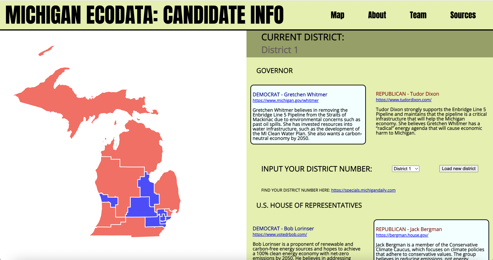

Project Lead: Angela Voit
Past Contributions: Cameron Moy, Paris Heard, Emma Linhart
Motivation:
Leading up to the 2022 Michigan Midterm elections, our team wanted to develop a hub for Michigan voters to educate themselves on candidates' stance on differenct environmental policies. Following the election, we populated the site with the winning candidate and data around constituents' beliefs in the same environmental policies. Although now an artifact, the candidate tracking website can still be useful in understanding environmental policy beliefs around Michigan and how that might influence future elections.
Methods:
The candidate tracking website was build using D3.js, HTML, CSS, and JavaScript and was first designed in Figma. The candidate and consistuent data was sourced through extensive digitally available research.
